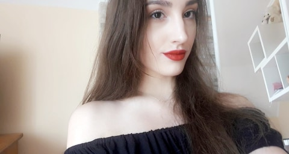
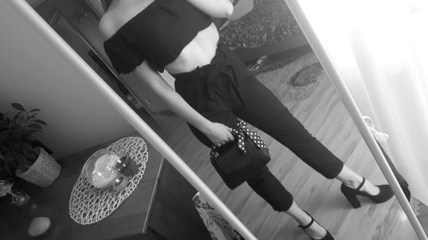
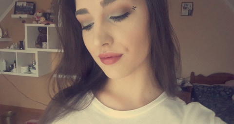

Taniec zagościł w moim życiu dosyć późno, bo dopiero 2 lata temu, ale od samego początku sprawił że uśmiech nie schodził mi z twarzy. Czasem było ciężko, czasem trudno było choć trochę dorównać osobom, w których życiu ta dyscyplina pojawiła się już we wczesnym dzieciństwie, czasem były momenty gdy łatwiej było się poddać, ale nie sztuką jest się poddać i żyć dalej bez kierunku w swoim życiu lecz dążyć do celu za wszelką cenę. To co robię, robię dla siebie. Nie potrzebuje niczego udowadniać nikomu innemu oprócz siebie, co daje niezastąpione uczucie satysfakcji gdy wreszcie za 5, 15 czy 30 razem coś wyjdzie.
Moje Pasje
Taniec


Makijaż i moda
Obie te rzeczy są idealnym sposobem na spędzanie wolnego czasu! Co prawda na codzień nie mam dużo czasu żeby wybrać odpowiedni strój i robić spektakularny makijaż, ale uwielbiam to robić w wolnym czasie. Każdy kto mnie zna, wie że bez makijażu nie wychodzę z domu. Po prostu czuje się dużo lepiej gdy mam coś na twarzy. Poranny makijaż jest w stanie zastąpić mi kawę, a każdy grosz zainwestowany w kosmetyki nie może być stracony. Potrafię spędzać godziny przeglądając nowości kosmetyczne, królujące trendy czy też tutoriale znanych makijażystów. Najlepsze jest w tym to, że każdego dnia można się zmienić w kogoś innego; można dopasować makijaż do nastroju lub wręcz przeciwnie coś ukryć. Makijaż jest z ludźmi od tysięcy lat i nadal jest coś w nim do odkrycia. Po prostu jest niesamowity! Moda jest trochę osobnym tematem, bo bardziej niż na sobie skupiam się na innych osobach. Trochę brakuje mi odwagi na niektóre stylizację, które uwielbiam oglądać na innych. Również potrafię spędzić mnóstwo czasu przeglądając nowości i trendy sezonu jak również różne pomysły na stylizacje, które mam nadzieję kiedyś u siebie użyć. Uwielbiam znane marki i chodzenie po sklepach. W tak szybko rozwijającej się dziedzinie każdy znajdzie coś dla siebie i to jest w tym najpiękniejsze!



Fotomodeling
W wolnych chwilach bardzo lubię pozować do zdjęć. Aparat jest niesamowitym narzędziem które potrafi uchwycić pewien moment na zawsze. Na zdjęciu też można pokazać różną naturę człowieka; przedstawić go w różnej sytuacji i nadać mu różne nastroje. Dzisiaj żyjemy w czasie miliona selfie, gdzie nikt nie przykłada uwagi do wykonania zdjęcia, a to właśnie te robione aparatem, z precyzją i pasją są najlepsze. Takie sesje zdjęciowe sprawiają radość zarówno modelowi jak i fotografowi a gdy w grę wchodzi pasja i nie koniecznie praca, człowiek może być i tym i tym.